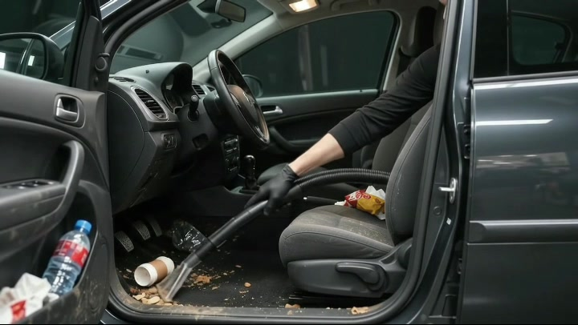

Interior vacuum
Loose debris travels into seat seams, mat edges and the narrow space beside the centre console. A methodical dry vacuum works through those areas before the mats go back in.
Choose a service ↓
Footwell
Lift out the mats and work the exposed carpet from more than one direction.
Work through the cabin
Clear
Remove loose rubbish and lift out the mats to expose the carpet underneath.
Extract
Vacuum the seats and footwells, using a crevice attachment around rails and seams.
Finish
Work across the mats and inspect the carpet from a second angle before refitting them.
Service notes
Who is it for?
Everyday crumbs and dry dirt in the seats, mats and footwells.
What is covered?
Seats, accessible carpet, mats and reachable crevices. The deep option adds the boot floor and extra crevice work.
Scope and preparation
Wet extraction, stain treatment and extensive pet-hair removal require their own assessment. Empty storage pockets and remove valuables and personal items before the visit.
Does vacuuming remove stains?
Vacuuming lifts loose dry debris. Staining in fibres may need a separate upholstery treatment.